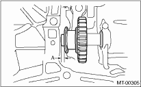
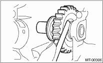

MANUAL TRANSMISSION AND DIFFERENTIAL(5MT) > Reverse Idler Gear
1. Select the appropriate reverse shifter lever from the table below, and adjust until the gap between the reverse idler gear and transmission case wall is within specification.
Clearance A:
6.0 — 7.5 mm (0.236 — 0.295 in)

|
Reverse shifter lever | ||
|
Part number |
Mark |
Remarks |
|
32820AA070 |
7 |
Far from case wall |
|
32820AA080 |
8 |
Standard |
|
32820AA090 |
9 |
Closer to case wall |
2. Select the appropriate washer from the table below, and adjust until the gap between the reverse idler gear and transmission case wall is within specification.
Clearance:
0 — 0.5 mm (0 — 0.020 in)

|
Washer | |
|
Part number |
Thickness mm (in) |
|
803020151 |
0.4 (0.016) |
|
803020152 |
1.1 (0.043) |
|
803020153 |
1.5 (0.059) |
|
803020154 |
1.9 (0.075) |
|
803020155 |
2.3 (0.091) |